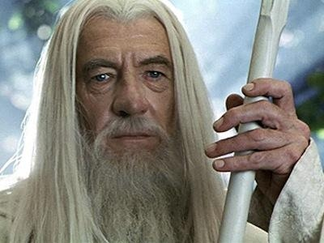

Братство кільця
«Братство Кільця» , також відоме як «Співдружність кільця» , «Зберігачі» або просто
«Дев'ять Мандрівників» ,
– це союз, що складається з дев'яти представників вільних народів Середзем'я у Війні за кільце .
Головною метою цього
братства була допомога Зберігачеві Кільця Всевладдя в супроводі його в Мордорі , і знищення Кільця в полум'ї
Рокової Гори
Ородруїн , де Кільце колись було викуто, в єдиному місці світу, де ця каблучка могла бути знищена.
Фродо Беґінз

Фродо Беґгінс – видатний хобіт із Шира , єдиний син Дрого Беґгінса та Примули Брендібак ,
племінник Більбо
Беґґінса .
Один із головних героїв роману Дж. Р. Р. Толкіна "Володар кілець", що грає в ньому ключову
роль. Фродо став
охоронцем Єдиного Кільця , яке розшукував Темний Володар Саурон , щоб за його допомогою набути повної
могутності. Фродо проніс Кільце з Шира до Рівенделла і зголосився нести його далі, в Мордор , щоб знищити у
вогні Фатальної гори .
Гендальф
Гендальф Сірий/Білий - один з центральних персонажів творів Дж. Р. Р. Толкіна " Володар кілець " і " Хоббіт, або Туди і назад ", де він постає мудрим, могутнім чарівником , що перебуває в Раді Мудрих і допомагає слабким.За своєю природою походить з раси Айнур і зараховується до малих (по могутності) ангельських духів - Майар , в чині яких вважався наймудрішим. Його місія, покладена на нього Валар , полягала у допомозі Вільним народам Середзем'я у боротьбі проти Темного Володаря Саурона , одного з могутніх Майар, що звернулися до зла. Гендальфу єдиному з-посланців -Істарі вдалося впоратися із завданням, і в кінці Третьої Епохи він повернувся в Безсмертні Землі .
Семуайз Гемджі
Семуайз (Сем) Гемджі - хобіт з Шира , один з дев'яти членів Братства Кільця , слуга Фродо Беггінса і його найвірніший друг, що розділив з ним весь тягар путешествий метою знищення Єдиного Кільця , згодом – семиразово переобраний мер Мічел Делвінга. Поряд з Більбо і Фродо Беггінсами, один із трьох хобітів, які удостоїлися честі залишити Середзем'я по Прямому Шляху в Безсмертні Землі .
Меріадок Брендібак
Меріадок (Мері) Брендібак на прізвисько Великолепний ( англ. Magnificent ) - хобіт з Шира , друг, соратник і родич Фродо Беггінса і один з дев'яти членів Братства Кільця . Єдина дитина Сарадока Брендібака і Есмеральди Тук , що народилася в 2982 р . Т. е. Його мати припадала молодшою сестрою тану Шира Паладіну II , чий син Перегрін , таким чином, був двоюрідним братом Меріадока, і разом вони були нерозлучними друзями. Меррі захоплювався човнами і поні, а також відчував великий інтерес до історії та картографії не тільки Шира, а й решти Середзем'я .
Перегрін Тук
Перегрин (Піпін) Тук - хобіт з Шира , друг і соратник Фродо Беггінса і один з дев'яти членів Братства Кільця , згодом - 32-й тан Шира . Він був наймолодшим із чотирьох хобітів, які приєдналися до Фродо у його поході. Батьками Піппіна були тан Паладін Тук II та його дружина Еглантіна Бенкс , і в сім'ї він був наймолодшим, єдиним сином, і трьома його старшими сестрами були Перлина , Першоцвіття та Первинка . Його двоюрідний брат і найкращий друг, з яким вони були нерозлучні — Меріадок Брендібак , сином сестри Паладіна Есмеральди . Волосся на голові і ногах Піпіна (які були особливо волосистими навіть для хобіту ) були майже золотими і кучерявими.
Арагорн II Елесар

Арагорн , коронований як Елессар - людина - дунадан , син Араторна II і Гільраен ,шістнадцятий вождь Дунедайн Півночі , прямий нащадок Ісільдура , старшого сина Еленділя і останнього Верховного короля . Третя і остання в історії Середзем'я людина, що одружилася з ельфійською дівою — його дружиною та королевою стала Арвен Ундоміель, дочка Ельронда Полуельфа . Арагорн став найбільшим з людей своєї епохи - він очолював Людей Заходу у війні проти Темного Володаря Саурона і допоміг знищити Єдине Кільце Влади (був одним з дев'яти членів Братства Кільця ), а після перемоги об'єднав королівства Арнор і Гондор в єдину державу .
Леголас
Леголас - ельф із Сіндар , син Трандуїля , короля лісових ельфів Північного Лихолесся . Один із дев'яти членів Братства Кільця , який брав участь у поході до Фатальної гори та у Війні Кільця . Будучи єдиним ельфом у лавах Братства, Леголас здружився з гномом Гімлі , що було примітно для обох народів.
Гімлі
Гімлі - гном з королівського роду Дуріна , син Глоїна і племінник Оіна . Єдиний представник свого народу в лавах Братства Кільця .
Боромир

Боромір — старший син і спадкоємець правлячого намісника Гондора Денетора II та його дружини Фіндуїлас з Дол Амрота , брат Фараміра , один із дев'яти членів Братства Кільця .